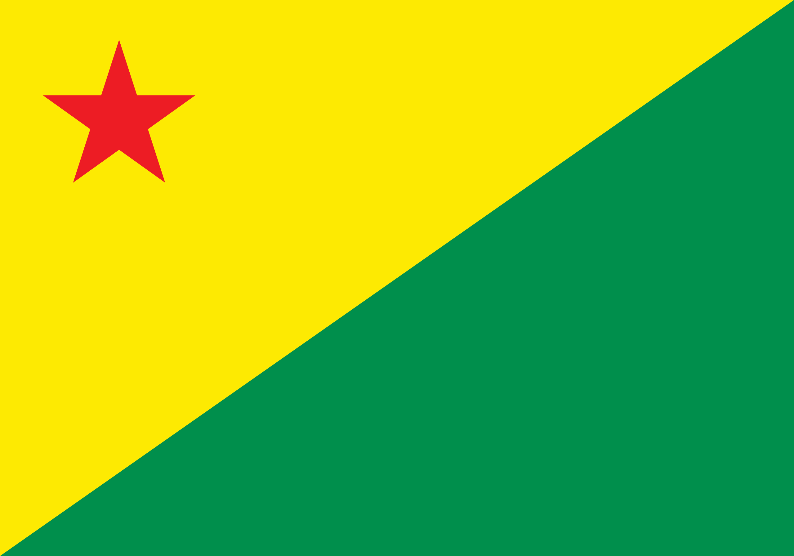
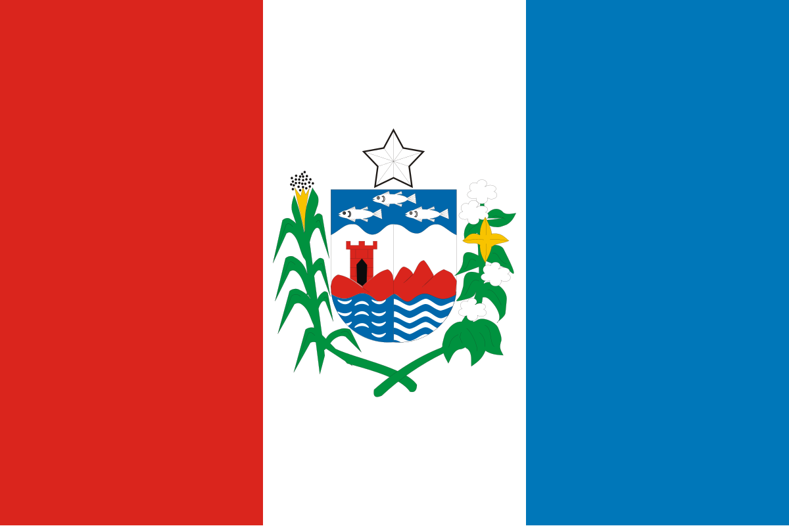
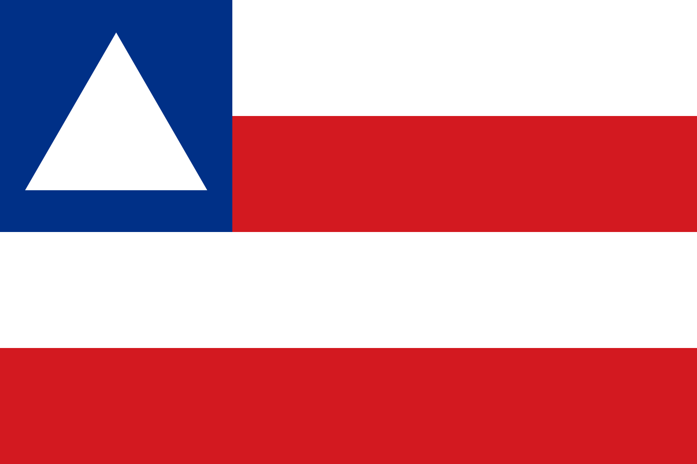

| Estado | População | Capital | Região | Bandeira |
|---|---|---|---|---|
| Acre | 880.631 | Rio Branco | Norte |  |
| Alagoas | 3.127.683 | Maceió | Nordeste |  |
| Amapá | 733.759 | Macapá | Norte | |
| Amazonas | 4.281.209 | Manaus | Norte | |
| Bahia | 14.141.626 | Salvador | Nordeste |  |
| Ceará | 9.233.656 | Fortaleza | Nordeste | |
| Espírito Santo | 4.102.129 | Vitória | Sudeste | |
| Goiás | 7.056.495 | Goiânia | Centro-Oeste | |
| Maranhão | 6.775.152 | São Luís | Nordeste | |
| Mato Grosso | 3.658.813 | Cuiabá | Centro-Oeste | |
| Mato Grosso do Sul | ||||
| Minas Gerais | ||||
| Pará | ||||
| Paraíba | ||||
| Paraná | ||||
| Pernambuco | ||||
| Piauí | ||||
| Rio de Janeiro | 16.055.174 | Cidade do Rio de Janeiro | Sudeste | |
| Rio Grande do Norte | ||||
| Rio Grande do Sul | ||||
| Rondônia | ||||
| Roraima | ||||
| Santa Catarina | ||||
| São Paulo | ||||
| Sergipe | ||||
| Tocantins |